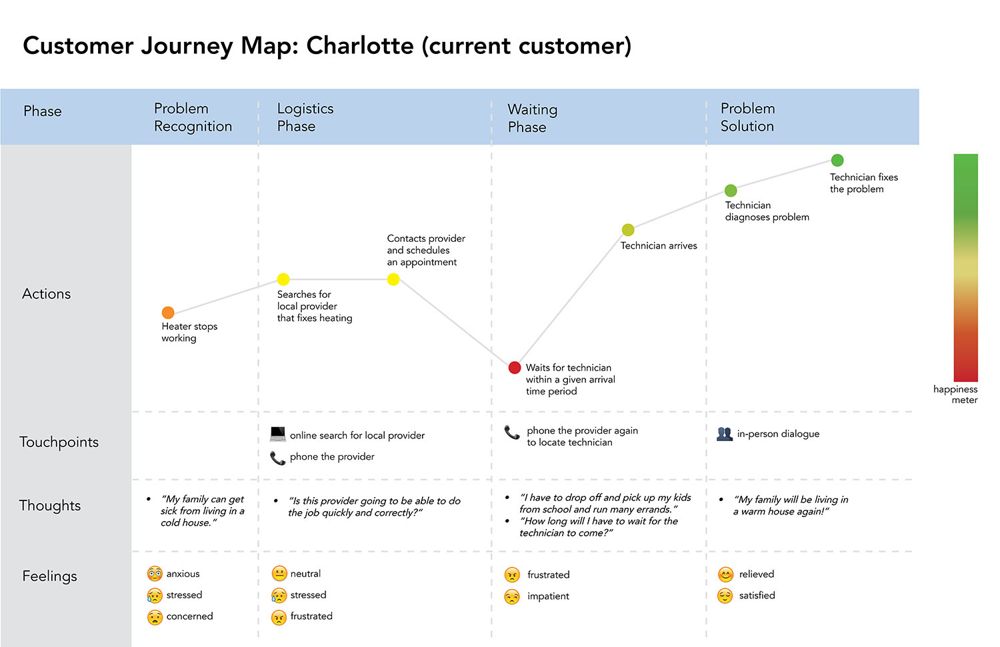
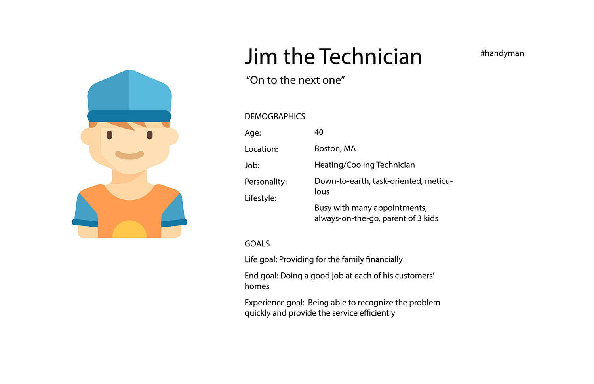
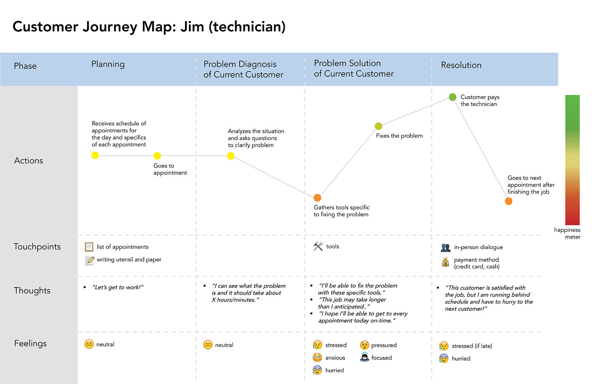
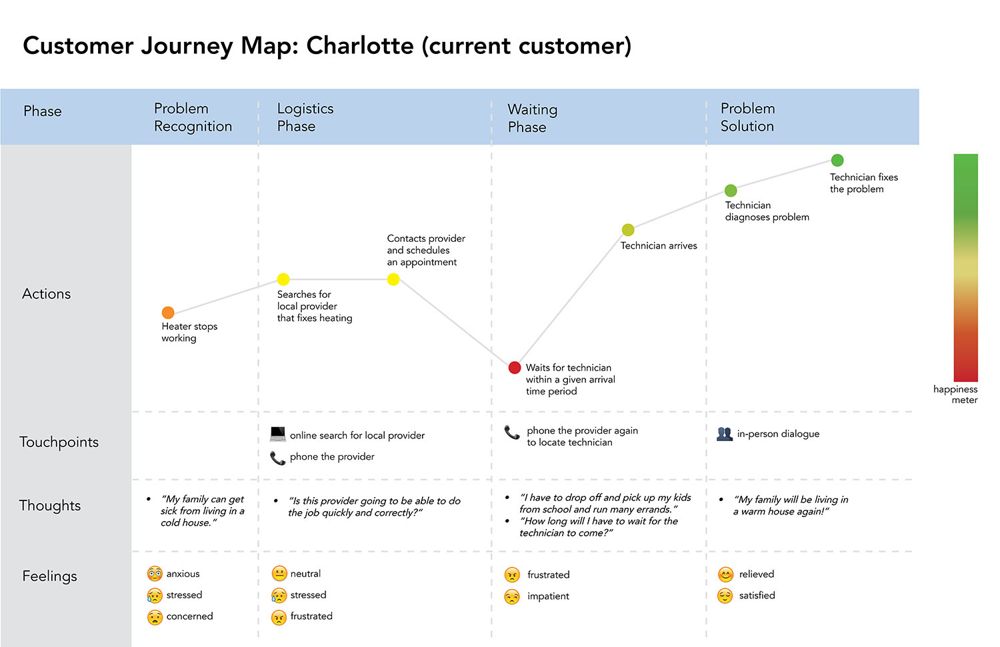
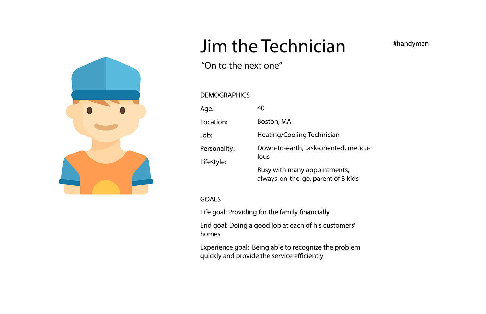
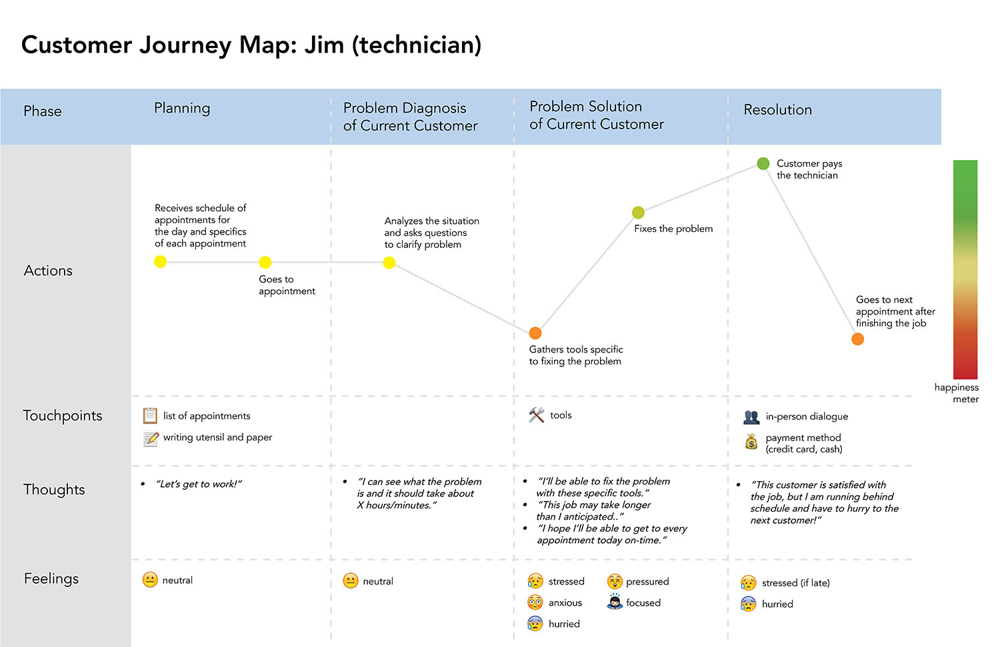

Designing Mobile Information Systems
During an Interaction Design course at Carnegie Mellon University, my team and I chose a problem domain, conducted thorough research, and designed a mobile app. We gained experience in conducting interviews for research, creating personas and storyboards, wire-framing, prototyping, testing our designs, and working with Illustrator, InDesign, and InVision for the click-through demonstration presented during class.
- user experience design
- prototyping and wire-framing
- usability testing
- Illustrator
- InDesign
Problem Domain
We explored the problem existing in the communication between customers and home-service providers. Customers usually wait a long amount of time for the home service provider to come to their homes because of the large arrival window, causing them to feel impatient, frustrated and anxious.
Research
In order to first get a better understanding of the problem domain, we researched the process of how technicians and mechanics contact customers and provide service throughout the day. We researched various services online and also conducted interviews with both technicians from local companies and people who recently used these home-services. Using this raw data, we created an affinity diagram to analyze our findings.
Synthesis and Ideation
Significant Insight
When customers have to wait for a service provider to come to their homes, they desire some form of feedback (visual, verbal) in order assure to that the technician is making progress and on their way.
Personas and Customer Journey Maps
We created personas for the primary user of our app, the technician, and the secondary stakeholder, the customer. We chose the technician as the primary user mainly because the actions of the technicians directly affect the customer's satisfaction. If we aim to design our app to improve the technician's method of informing customers, the customers will ultimately be satisfied. We also created customer journey maps to really understand the emotions that both the technician and customer feel during the process of providing home-service.
 





Storyboard
After considering several different scenarios regarding this problem domain, we chose one that related most to our significant insight and created a storyboard that displayed a mobile app that made the communication between customer and technician easier.

Early Design
Paper Prototypes and Usability Testing
In our usability testing of the service-provider app, we had paper wireframes ready, which included a cut-out iphone that can be moved around on a sheet of paper that had multiple hand-drawn screens to show the basic functions of our app. We first introduced our problem domain and informed them that they are using the app in the perspective of a heating/cooling technician. We initially had the users complete these three tasks:
- Tell your 8 a.m. appointment that you are on your way
- Check into your 8 a.m. appointment
- Update your current progress so that Steve (next customer on technician’s schedule) knows of your status
Key Findings from Usability Tests:
- a lot of the confusion existed because of extra, unnecessary buttons.
- users didn’t want to click so many buttons when they were short on time
- users were confused with the progress tracker, how it worked, and how to update it
What we did to improve the app:
- reduced the number of buttons and screens a user had to go through in order to do their intended action
- make the progress tracker easier to use and more understandable